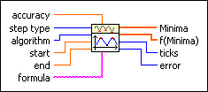
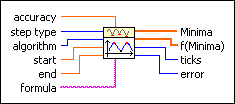
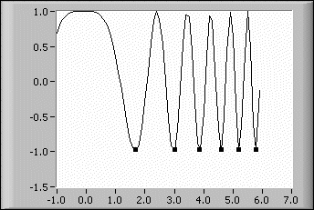

Find All Minima 1D VI
Owning Palette: Optimization VIs
Requires: Full Development System
Determines all local minima of a given function in a given interval.

 Add to the block diagram Add to the block diagram |
 Find on the palette Find on the palette |
Owning Palette: Optimization VIs
Requires: Full Development System
Determines all local minima of a given function in a given interval.

| Add to the block diagram |
Find on the palette |
 |
accuracy controls the accuracy of the minimum. The method stops if two consecutive approximations differ no more than the value of accuracy. The default is 1.00E-8. | ||||
 |
step type controls the spacing used for the function values. A step type value of 0, fixed function, represents uniformly spaced function values. A value of 1, modified function, represents the optimal step size. In general, modified function leads to more accurate Minima. The default is 0. | ||||
|
algorithm specifies the method used by the VI. The default is 0.
|
||||
|
start is the start point of the interval. The default is 0.0. | ||||
|
end is the end point of the interval. The default is 1.0. | ||||
 |
formula is a string representing the function under investigation. The formula can contain any number of valid variables. | ||||
 |
Minima is an array of all found minima of formula in the interval (start, end). | ||||
|
f(Minima) is the function values at the points Minima. | ||||
 |
ticks is the time in milliseconds for the whole calculation. | ||||
 |
error returns any error or warning from the VI. You can wire error to the Error Cluster From Error Code VI to convert the error code or warning into an error cluster. |
 | Note If you want to find out the maxima of a function, you must take –function as the inputs. The –f(Minima) are the correct maximal function values. |
The Find All Minima 1D VI finds all minima in the given interval (start, end). To find all minima 1D of f(x) = cos(x2), enter the following values on the front panel:
The following illustration shows the plot of f(x). The boxes on the plot are the locations of the minima.

| Note If the start or end values are close to the minimum value, use the modified function step type. |
Refer to the 1D Explorer VI in the labview\examples\Mathematics\Optimization directory for an example of using the Find All Minima 1D VI.
 Open example Find related examples
Open example Find related examples